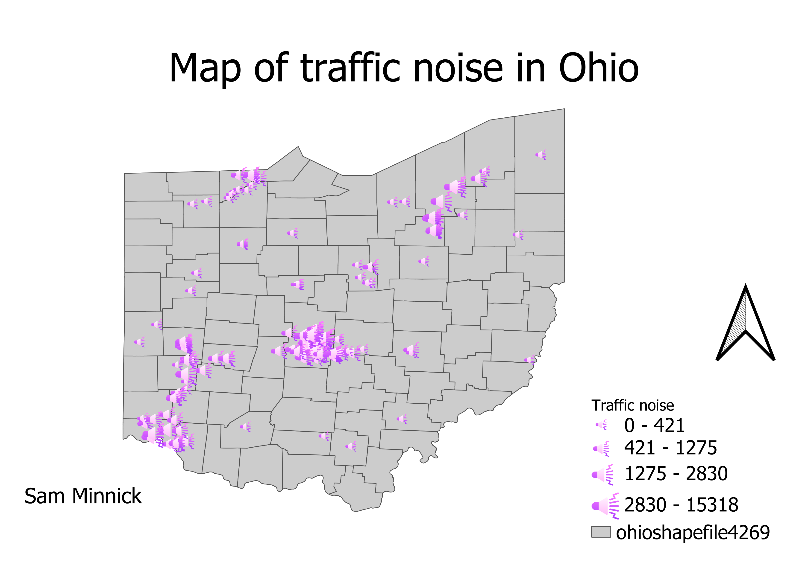

Homework 9: Census data choropleth
Samantha Minnick
A map of Traffic noise in Ohio based on The number of cars recorded when measurement was taken. I selected this data set because noise pollution affects animals and human wellbeing.

Data used for this project
CSV dataset
link to orginal data source (Ohio TIMS)
Link to shapefile